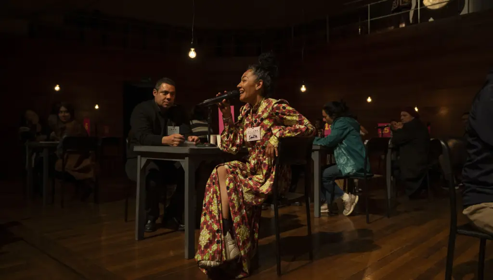
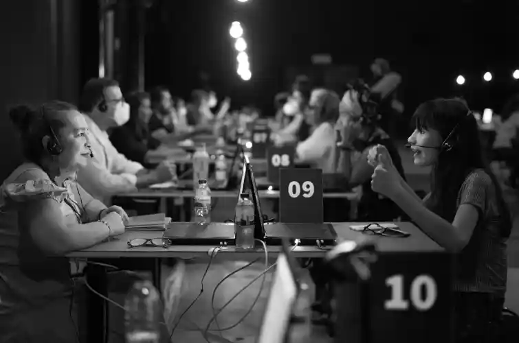
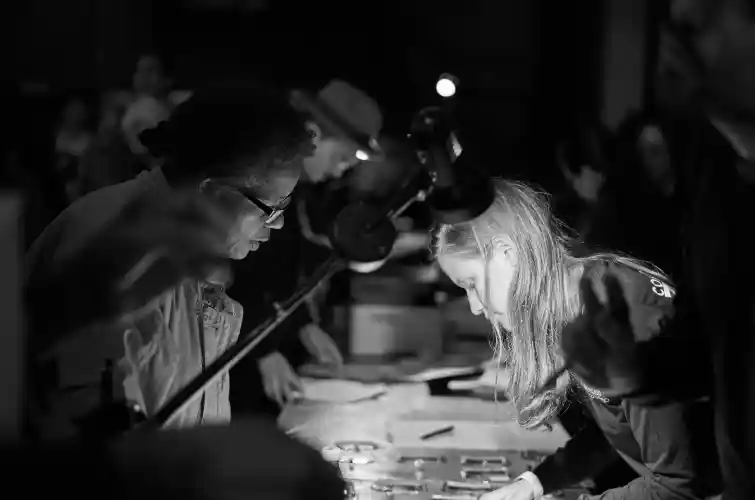
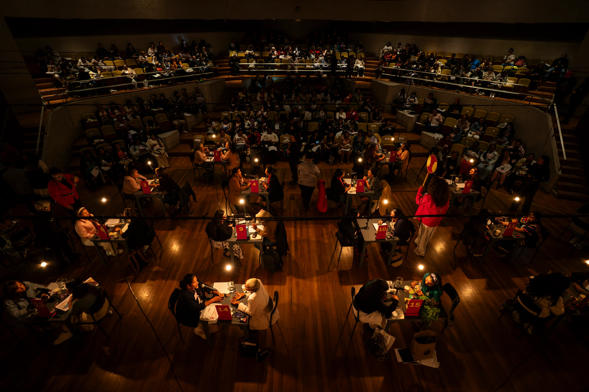
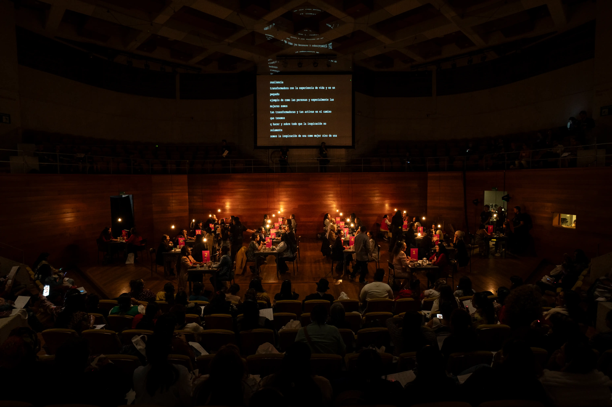
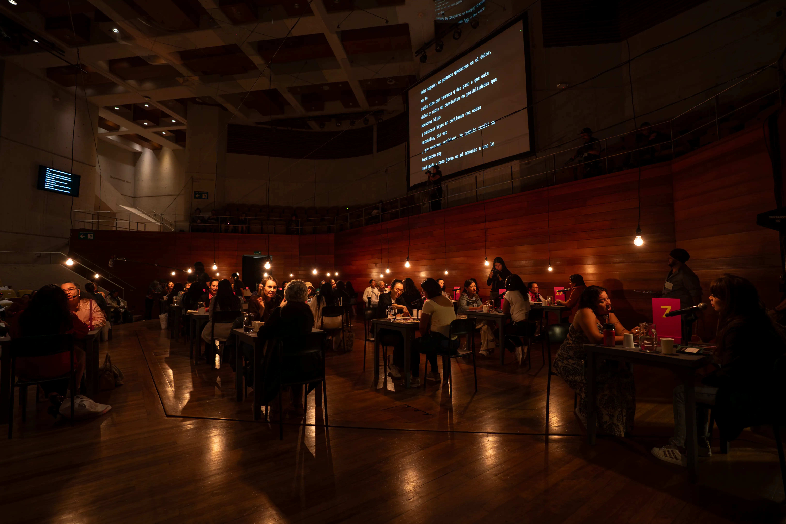
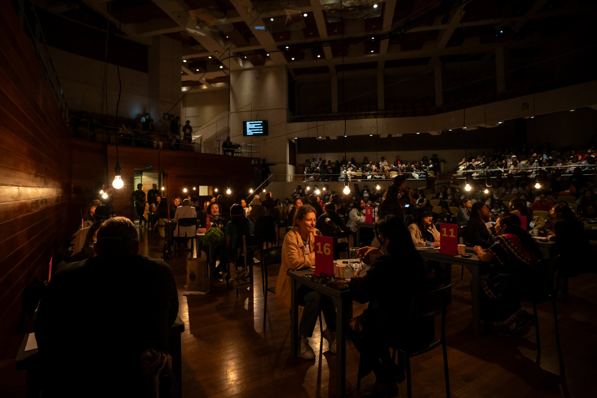
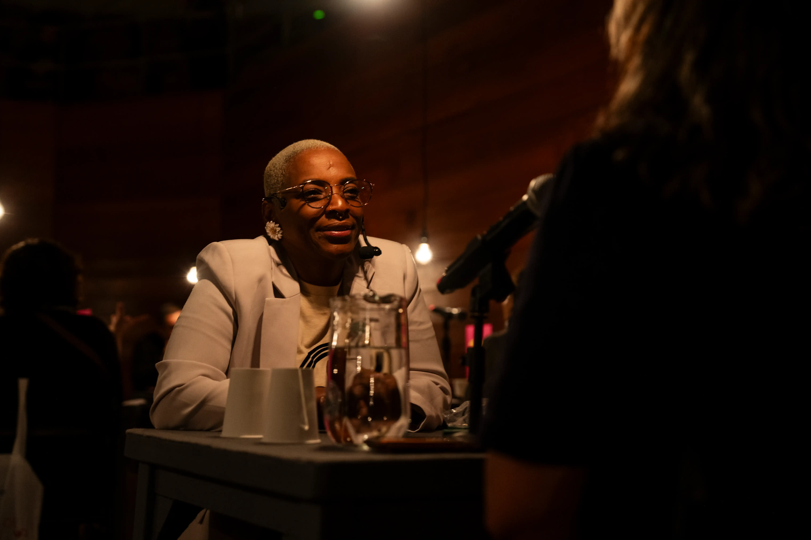

BIOECONOMÍAS: OTRAS FORMAS DE ECONOMÍA PARA NUESTRO TIEMPO
En las sabanas, selvas, montañas, barrios y ciudades, las madres cabeza de familia cuidan hijos, cocinan, tejen, limpian, atienden adultos mayores, cosen, intercambian, venden, crean formas de resolver y sostener la economía de sus hogares. De manera invisible, silenciosa y solitaria, las mujeres sostienen con este trabajo las generaciones futuras y el bienestar de nuestra nación sin el suficiente reconocimiento del Estado y de la sociedad.
De acuerdo con el informe El Panorama Social de América Latina y el Caribe de la Comisión Económica para América Latina y el Caribe, CEPAL (2025), maternar, cuidar y trabajar formalmente se vuelven actividades cada vez más antagónicas en medio de una policrisis que amenaza la existencia de la humanidad y exige más trabajos de cuidados. Las mujeres dedican hasta el triple de tiempo al trabajo de cuidado no remunerado en comparación con los hombres, representando entre el 19 % y el 27 % del PIB regional.
La desigualdad revelada en estas cifras nos invita como instituciones y sociedad a que, desde diferentes perspectivas, disciplinas y conocimientos, construyamos reflexiones transdisciplinares e interculturales que nos permitan imaginar y recrear el valor del cuidado como sustento de la vida, el rol de las madres cabeza de familia en el sostenimiento de la sociedad y políticas públicas para garantizar el acceso a derechos de manera integral.
Desde el Ministerio de Igualdad y Equidad, Mapa Teatro y la Fundación Panamericana para el Desarrollo queremos propiciar en este Mercado de Conocimiento y No-Conocimiento Útil, un espacio de intercambio de voces, experiencias y conocimientos para que las madres cabeza de familia del país sean visibilizadas, honradas y reconocidas.
Directora para las Madres Cabeza de Familia
Viceministerio de las Mujeres — Ministerio de Igualdad y Equidad
SABEDORAS Y SABEDORES
La curaduría de esta edición fue un ejercicio de escucha y rastreo a lo largo de diversos territorios de Colombia. El proceso se centró en identificar a 60 sabedoras, sabedores, expertas y expertos cuyos oficios encarnan las bioeconomías en la práctica cotidiana.
CONVERSACIONES | AUDITORIO FABIO LOZANO, BOGOTÁ
MEMORIA VIVA
Reviva los momentos destacados del encuentro y los testimonios de las y los participantes en el Auditorio Fabio Lozano.
ANFITRIONES
Espacios, atmósferas y momentos compartidos durante el desarrollo de las sesiones y mesas de diálogo territorial.









